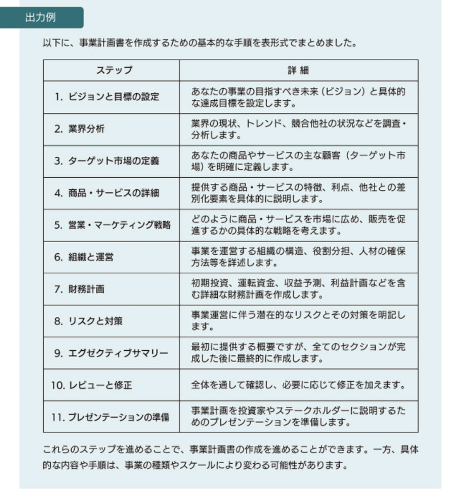

テキスト生成AIを用いたビジネス応用
このセクションでは、生成AIのビジネス応用について学習します。
01 メールの作成
相手に伝えるべき要件を入力することで、趣旨に合うメール文を作成できます。 できるだけ詳しく設定することで、趣旨に合うメール文に近づきます。
プロンプト例
以下の内容でメールを作成してください。 ・自分：生成AI活用普及協会の佐藤 ・相手：○○株式会社の鈴木部長 ・要件1：先日の打ち合わせのお礼 ・要件2：その際に頂いたアプリケーション開発に関する見積もりが思ったよりも高かった ・要件3：今回のアプリケーション開発に関しては断るが今後も良い付き合いをしたい
出力例
件名：先日の打ち合わせとアプリケーション開発に関する見積もりについて 鈴木部長様 いつもお世話になっております。生成AI活用普及協会の佐藤と申します。 先日はお忙しい中、打ち合わせにお時間をいただきまして、誠にありがとうございました。有意義な議論を重ねることができ、大変充実した時間となりました。 その際にいただきましたアプリケーション開発に関する見積もりについてですが、予想以上の金額となってしまったことから、残念ながら今回は見送らせていただくこととなりました。我々の予算規模との兼ね合いで、このような決定をせざるを得ない状況となり、大変申し訳ありません。 しかしながら、○○株式会社様とは引き続き良好な関係を維持し、今後も協力しあえるパートナーとしての関係性を深めていきたいと考えております。今後とも何卒よろしくお願い申し上げます。 お手数をおかけしますが、この件につきましてご理解いただけますと幸いです。 敬具 生成AI活用普及協会
⚠️ メール文を作成する上でのリスクや注意点
Q. 作成したメール文章に、機密情報や個人情報は含まれていないか？
AIモデルは、機械学習の過程で入力した情報を収集し、改善に役立てています。つまり、あなたが入力した文章にデータプライバシーに関する項目が含まれる場合、第三者に漏洩する可能性があるということです。機密性の高い情報や個人情報をAIに入力する際には特に注意が必要です。
💡 対策:
プロンプトとして入力する個人情報は、以下のように架空の情報へ置き換えて入力し、セキュリティを担保しましょう。
【例】AI株式会社 上田 様 ➡ ○○株式会社 佐藤 様
Q. 作成されたメール文章に誤訳や意味の誤解が含まれていないか？
AIは人間が行うような誤訳や誤解をすることがあります。AIはトレーニングデータから学習するため、そのデータが偏っていたり不完全だったりすると、出力も不正確になります。また、AIはあくまで機械であるため、人間の伝えたいニュアンスを完全に理解することはできません。したがって、誤解を招くような文章を生成する可能性があります。
Q. 人間らしい文章で作成されているか？
AIが作成するメールは、人間が作成したものと比較して感情的な要素や人間らしい個性を欠くことが多いです。これは、特にビジネスのコミュニケーションや人間間のコミュニケーションにおいて問題となる可能性があります。
【まとめ】
これらのリスクを踏まえ、文章生成AIを使う際には、出力された文章を自分自身で修正することが重要です。
特に、メールなどは会社毎にフォーマットが定まっている場合が多く、個々の会社の特色に合わせた文章を生成することはできないため、最終的には人間の手で修正を加える必要が生じます。
02 アンケート項目の作成
条件を満たすアンケートの項目の作成ができます。
プロンプト例
就活を控えた大学生を対象に、AIの活用をテーマにアンケートを作成します。項目を10個作成してください。
出力例
以下は、AIの活用をテーマにしたアンケートの項目の例です。 1. AIに関する知識レベル: AIについてどの程度の知識を持っていますか？ 2. AIの活用イメージ: AIがあなたの将来のキャリアや社会への貢献にどのように活用されると思いますか？ 3. AI技術への関心: AIの技術や応用に対する興味・関心はありますか？ 4. AIによる業界への影響: AIが将来的にどの業界に最も大きな影響を与えると思いますか？ 5. AIの利点: あなたが思うAIの最も大きな利点は何ですか？ 6. AIの課題: AIが直面している主な課題や懸念は何だと思いますか？ 7. AIと雇用: AIの普及が雇用にどのような影響を与えると思いますか？ 8. AIの倫理的な問題: AIの開発や利用において気になる倫理的な問題はありますか？ 9. AI教育への期待: 大学教育において、AIに関する教育や学習の充実が重要だと思いますか？ 10. AIへの期待と不安: AIの将来に対して期待することや不安な点はありますか？
アンケート項目生成上のリスクや注意点
AIの訓練データとバイアス
生成AIは訓練データに基づいて出力するため、訓練データに含まれるバイアスがAIの出力に反映される可能性があります。 したがって、出力された文章に差別的な発言やバイアスが含まれていないかを必ず確認しましょう。
※バイアス...偏見や思い込み、思考の偏りのこと
03 アンケートの分析
口コミやアンケートなどのデータを整理し、分析することができます。 分析の結果から、良い点や改善点の抽出も可能です。
プロンプト例
以下の新商品（角煮ラーメン）についてのアンケート結果から、商品の良い点と改善点を整理して表示してください。 「角煮ラーメンは、豚肉の旨みがたっぷりと詰まったスープが特徴で、とても美味しかったです。ただ、角煮の味付けが濃すぎて他の具材の風味が引き立たなかったのが残念です。」 「この角煮ラーメンは、角煮の柔らかさとスープの奥深い味わいが魅力でした。ただし、麺の硬さがやや不均一であり、もう少し一貫した食感が欲しかったです。」 「角煮ラーメンは、スープのコクと角煮のジューシーさが絶妙で、一度食べると病みつきになる味でした。ただ、スープの温度がやや低めで提供されており、もう少し熱々で食べたかったです。」 「この角煮ラーメンは、具材の豚肉と麺のボリュームが満足できる一杯でした。ただ、スープの味付けが濃すぎて飽きが来ることがあり、少し軽めのバリエーションもあると嬉しいです。」 「角煮ラーメンは、角煮の柔らかさとスープの深い味わいが絶妙で、満足感のある一杯でした。ただ、具材の野菜が少なく、バランスの良い食事になりにくかったのが残念です。」
出力例
【良い点】 豚肉の旨みがたっぷりと詰まったスープが特徴的で美味しい。 角煮の柔らかさとスープの奥深い味わいが魅力的。 スープのコクと角煮のジューシーさが絶妙で、一度食べると病みつきになる。 【改善点】 角煮の味付けが濃すぎて他の具材の風味が引き立たない。 麺の硬さが不均一であり、もう少し一貫した食感を求める。 スープの温度がやや低く提供されており、もう少し熱々で食べたい。 スープの味付けが濃すぎて飽きが来ることがあり、軽めのバリエーションも希望。 具材の野菜が少なく、バランスの良い食事になりにくい。 以上のアンケート結果から、角煮ラーメンの良い点と改善点を整理しました。豚肉の旨みやスープの味わいが高く評価されている一方で、味付けや具材のバランスに改善の余地があることが分かります。
04 キャッチコピーの作成
特徴を伝えるだけでキャッチコピーを作成できます。 この際に、「一流のコピーライター」などの肩書きや役割を与えたり、できるだけ詳細な情報を入力したりすることで、出力される文章の精度を自分の要求に近づけることができます。
プロンプト例
「一流のコピーライター」として、以下の特徴を持つイベントを宣伝するためのキャッチコピーを複数作成してください。 ・イベント名は〇〇音楽祭 ・今年で10周年 ・開催場所は自然が豊かな北海道 ・開催時期は夏 ・旬のロックバンドやアイドルグループ総勢50組が全国から参戦
出力例
以下は、「一流のコピーライター」として〇〇音楽祭を宣伝するためのキャッチコピーの例です。 「ロックの熱狂、アイドルの輝き。〇〇音楽祭、50組のスターが集結する最高の夏祭り。」 「音楽の旋律が響き渡る。10年に一度の感動の祭典。〇〇音楽祭、北海道で夏の奇跡が起こる。」 「感動の舞台、誕生から10年。〇〇音楽祭、今夏も心揺さぶる熱い瞬間が待っている。」 「音楽の饗宴、北海道で開演。〇〇音楽祭、10周年の輝きが燃え上がる夏の夜。」 「10年の歩みが紡ぐ物語。〇〇音楽祭、北海道で煌めく感動の幕が上がる。」 「音楽が紡ぐ夏の奇跡。〇〇音楽祭が贈る10周年の感動ストーリー。」 「熱き魂が交わる舞台、〇〇音楽祭。北海道で10周年を迎える感動の瞬間に立ち会おう。」 「10年目の伝説、〇〇音楽祭！夏の北海道が、今、最高に熱い！」 「夏の饗宴が、豊かな大地で輝く。〇〇音楽祭、今年で10周年。」 「北海道の自然と共に、50組の熱き魂が轟く。〇〇音楽祭、待ったなしの10周年！」 「一夏の夢が、ここに。〇〇音楽祭10周年、全国から集まった50組が奏でる夏の交響曲。」 「北の大地が震える、音の海への誘い。〇〇音楽祭、今年10周年、逃すなこの夏！」 「北海道の自然が奏でる一夏の祭典、〇〇音楽祭。今年で10周年、熱狂の舞台へようこそ。」 「豊かな自然と共鳴し、心に響く旋律を奏でる。〇〇音楽祭、10周年の夏、あなたもその一部に。」
このように、キャッチコピーの素案が一瞬にして作成されます。
05 ビジネス書類のテンプレート作成
一般的なビジネス書類のテンプレートを作成することができます。
プロンプト例
一般的な請求書のテンプレートを作成してください。
出力例
以下は一般的な請求書のテンプレートです。 請求書番号 [請求書番号] 請求日 [請求日] 納品日 [納品日] 請求書宛先 [請求書宛先] 〒 [〒] 住所 [住所] 電話番号 [電話番号] FAX番号 [FAX番号] 担当者名 [担当者名] ご請求内容 品名 [品名] 数量 [数量] 単価 [単価] 金額 [金額] 合計金額 [合計金額] お支払い期限 [お支払い期限] お支払い方法 [お支払い方法] 備考 [備考]
ビジネス書類作成上のリスクや注意点
秘匿性の高い情報の入力に際して
ビジネスにおいて作成される書類は、秘匿性の高い情報や個人情報が含まれる可能性が非常に高いため、上記プロンプトを入力する際は、架空の名称や情報を入力し、最終的に人間の手で編集作業を行いましょう。
06 アジェンダの作成
打ち合わせや会議など、簡単なアジェンダ例を作成することが可能です。
プロンプト例
新商品開発のための会議を90分で行います。食品メーカーの開発職としてアジェンダを作成してください。
出力例
90分の新商品開発会議のアジェンダを以下のように提案します： 1. 導入（10分） 会議の目的とゴールの確認 参加者の自己紹介と役割の確認 前回の会議のアクションポイントの進捗状況の共有 2. 市場分析の共有（20分） 現在の市場状況、トレンド、競合他社の動向についてのプレゼンテーション 顧客のニーズや期待についての分析報告 Q&A 3. アイデアブレスト（30分） 新商品に対する意見や提案のオープンディスカッション 全ての参加者がアイデアを自由に共有 評価基準に基づいてアイデアを評価 4. アイデアの選定とプロトタイピング（20分） 評価したアイデアから優れたアイデアを選択 選ばれたアイデアを元に初期の商品コンセプトやプロトタイプを設計 プロトタイプのフィードバックと改善案を共有 5. 行動計画と次回会議の準備（10分） 各タスクの責任者を指定し、目標期日を設定 問題点や課題、サポートが必要な点を明らかにする 次回の会議日程と議題の確認 このアジェンダは参加者が事前に必要な情報を準備し、会議がスムーズに進行するように設計されています。ただし、具体的な状況によっては適宜調整が必要かもしれません。
07 業務の手順を分解
慣れない業務や未経験のタスクなど、プロセスとその順番を分解して教えてくれます。 さらに、求める出力形式を指定（ここでは、「表形式で」と入力）することで、より分かりやすい出力を得ることができます。
プロンプト例
事業計画書を作成するにあたり必要な手順を分解して表形式でまとめてください。
出力例

※テキストでは表を表現できないため、参考書の画像を貼り付けています。
08 タスクの抽出
メモやメールなどの文章から、一瞬でタスクを抽出することができます。 但し、必ずしも文章から全てのタスクを抽出することができるとは限りません。
プロンプト例
以下のメールからタスクを抽出し、整理して表示してください。 お疲れ様です。先日の会議ではありがとうございました。 議事録の作成が終わりましたら、参加者へ次回日程のアナウンスと共にメールでお送りくださいませ。また議題にあがりました新商品についての企画書ですが、来週の水曜日（12日）までに本部長との打ち合わせがありますので、来週水曜日（12日）までに準備をよろしくお願いします。PDF形式と編集可能データの両方でいただけると幸いです。 引き続きよろしくお願いいたします。
出力例
このメールから次の3つの主要なタスクを抽出しました： 1. 議事録の作成と送信：次回会議日程と共に参加者へ議事録をメールで送る。 2. 新商品についての企画書の作成：来週の水曜日（12日）までに、新商品についての企画書を準備する。 3. 企画書のフォーマットと送信：企画書はPDF形式と編集可能なデータ（おそらくWordまたはGoogle Docsなど）の両方で提供する。 これらのタスクは期限と共に明確に示されており、それぞれの進行状況を追跡するための具体的なステップを定義することができます。
このまま次のタスクの指示を出せば、次の出力ではAIが文脈を読み取り、出力に反映してくれます。 プロンプトの例としては以下の通りです。
項目1の雛形を作成してください。 表形式で出力してください。 項目1のメール文を作ってください。 項目2の案を作ってください。
これらのプロンプトを続けて入力する際は、メールの原文を再度入力する必要がありません。 次々とタスクを完了させながら次のステップに進むことができます。
09 外国語の翻訳
翻訳を行うことができます。 何語に翻訳するかを指定し文章を記載します。
プロンプト例
以下の文章を日本語に訳してください。 Artificial Intelligence (AI) is a field of computer science that focuses on creating intelligent machines capable of performing tasks that typically require human intelligence.
出力例
人工知能（AI）は、通常人間の知能を必要とするタスクを実行できる知的な機械を作成することに焦点を当てたコンピュータ科学の分野です。
10 英単語から英文の作成
指定した英単語を用いて、英文の作成を行うことができます。 日本語訳をつけることも可能です。
プロンプト例
flower を用いた英文を5個作成しそれぞれに日本語訳をつけてください。
出力例
1 "The flower bloomed beautifully." 「花は美しく咲いた。」 2 "She picked a red flower." 「彼女は赤い花を摘んだ。」 3 "Flowers fill the garden." 「花々が庭を埋め尽くす。」 4 "Rain nourishes the flowers." 「雨が花々を潤す。」 5 "He gave her a sunflower." 「彼は彼女にひまわりをあげた。」
11 海外企業宛のメール文章の作成
要件と原語を指定すれば、他言語のビジネスメールも一瞬で作成できます。
プロンプト例
納期を急かすメールを英文で作ってほしいです。
出力例
もちろんです。以下に英語で納期を急かすメールの例を示します。具体的な詳細、例えば企業名、相手の名前、商品やサービスの詳細、期日などは適宜置き換えてご使用ください。 Subject: Urgent Request Regarding Delivery from [Your Company Name] Dear [Recipient's Name], I hope this message finds you well. This is [Your Name] from [Your Company Name]. We understand that the due date for the delivery of [Product/Service] from your company was set for [Due Date]. However, as of now, we have not yet received confirmation of the delivery. This product/service is vital to an important project we are currently working on, and any delays in delivery could potentially affect its progress. If there are any issues or reasons for the delay, we would appreciate it if you could inform us. Also, if possible, we kindly ask you to provide us with a new expected delivery date to minimize the impact on our project schedule. We greatly appreciate your prompt attention to this matter. Should you have any questions or require further clarification, please feel free to reach out. Thank you very much for your understanding and cooperation. Best regards. [Your Name] [Your Position] [Your Contact Information] This message maintains a respectful tone and clearly communicates the problem while requesting cooperation. It's always important in business communications to respect your counterparts and maintain positive relationships.
12 ディベートを行う
あるテーマに対して、役割を与えることでディベートを行うことができます。 問題点の発見や会議前のシミュレーションなどに活用できます。
プロンプト例
「人工知能による自動化が雇用市場に与える影響はポジティブかネガティブか？」をテーマに、 A: ポジティブ B: ネガティブ の立場で討論を会話形式で展開してください。
出力例
A: 私は、人工知能による自動化が雇用市場にポジティブな影響を与えると考えています。まず、自動化によって労働力が削減される一方で、新たな仕事の創出や労働力の再配置が進む可能性があります。人々はより高度なスキルを身につけることで、より創造的で高付加価値な仕事に従事できるのです。 B: でも、自動化が進むと、多くの労働者が不要となり失業者が増える恐れもあります。特に、単純なルーチンベースの作業や低賃金労働者にとっては、自動化の波によって雇用の機会が奪われるかもしれません。 A: それは確かに懸念すべき点ですが、自動化によって生産性が向上し、効率が高まることで企業の競争力が強化されます。これにより、経済成長が促進され、新たな雇用機会が生まれる可能性もあると思います。 B: しかし、自動化によって代替される仕事は、単純な作業だけでなく、一部の高度な仕事にも及ぶ可能性があります。それによって、中間層の仕事が減少し、所得格差が広がることも考えられます。 A: それは一部の職種に当てはまるかもしれませんが、同時に新しい技術や産業も生まれる可能性があります。例えば、人工知能の開発やメンテナンス、データ分析など、新たなスキルが求められる仕事が増えるかもしれません。 B: それには同意しますが、人工知能による自動化は一部の産業や職種に特に影響を与える可能性もあります。特に低賃金労働者や労働集約型の業界では、雇用機会の減少が深刻な問題になるかもしれません。 A: 確かに、人工知能による自動化は雇用市場に変化をもたらすでしょう。しかし、私たちはこの変化に対応し、教育や再教育の機会を提供する必要があります。人々には新たなスキルを身につける機会を与え、自動化に適応できるように支援する必要があります。また、政府や企業も労働市場の変化に対応するための政策やプログラムを導入することが重要です。 ・・・続く
13 姓と名の分離
手動では手間がかかり、Excelでも処理が難しい姓と名の分離ができます。 難読苗字でも対応が可能ですが、必ずしも正しいとは限らないので確認は必要です。
プロンプト例
以下の氏名を姓と名に分け、カンマを入れて表示してください。 美浜曜髪子 桜木舞子 輝夢龍之介 菅原響子
出力例
美浜曜髪子：美浜，曜髪子 桜木舞子：桜木，舞子 輝夢龍之介：輝夢，龍之介 菅原響子：菅原，響子
14 ふりがなの記載
人名や固有名詞にふりがなを振ることができます。 しかし、必ずしも正しいとは限らないので確認は必要です。
プロンプト例
以下の固有名詞に振り仮名を振ってください。 小鳥遊、紫苑、陽炎、鳩羽、柊木
出力例
小鳥遊（たかなし） 紫苑（しおん） 陽炎（かげろう） 鳩羽（はとば） 柊木（ひいらぎ）
15 ブレインストーミング
何か新しい発想を得たい時などに、テーマを与えることでブレインストーミングを行うことができます。
プロンプト例
新商品「角煮ラーメン」をPRしていくにあたりいくつかアイディアをください。
出力例
新商品「角煮ラーメン」のPRには以下のようなアイディアがあります： 1. ビジュアル重視の広告キャンペーン: 鮮やかで美味しそうなラーメンの写真を使用した広告を展開しましょう。角煮のジューシーな見た目や、ラーメンとの組み合わせが目を引くように工夫しましょう。 2. 味の特徴を強調した口コミキャンペーン: SNSやブログなどを活用して、試食した人々の口コミを広めましょう。角煮の柔らかさや、スープとの相性の良さ、独自の風味などを強調し、人々の興味を引くようなストーリーを作り出しましょう。 3. テイクアウトやデリバリー特典: 現在の飲食業界ではテイクアウトやデリバリーが重要な販売チャネルです。角煮ラーメンをテイクアウトやデリバリーで注文すると、 ・・・続く
さらに出力されたアイディアを深掘りすることもできます。
プロンプト例
2の味の特徴を強調した口コミキャンペーンでは具体的にどんなことをすれば良いでしょうか？
出力例
味の特徴を強調した口コミキャンペーンでは、以下のようなアイディアを活用することが効果的です: インフルエンサーとのコラボレーション: 人気のあるフードインフルエンサーやブロガーに角煮ラーメンを試食してもらい、その美味しさや特徴についてのレビューを書いてもらいます。インフルエンサーの信頼性やフォロワーの数を考慮し、ターゲットとする顧客層に合ったインフルエンサーを選ぶことが重要です。 サンプリング活動: 角煮ラーメンの試食サンプルを、商店街やイベント会場、オフィス街などで配布します。試食を通じて、直接人々に美味しさや特徴を体験してもらい、 ・・・続く
16 質問させながら一緒に進める
ここまで、プロンプティングを駆使することで、出力を操作する方法を学びました。 最後は、タスクの抽出から整理、完了までを生成AIと一緒に進める方法を紹介します。 以下のやり取りを見てみましょう。
プロンプト例
今回、私は新製品の開発を一から任されました。 新製品開発のために必要となる情報を私にどんどん質問してください。 その質問に私が答える形で、プロジェクト完了までのロードマップを作成してほしいです。
出力例
新製品開発に向けて、あなたから必要となる情報を一連の質問を通じて引き出します。そしてその回答をもとに、プロジェクト完了までのロードマップを作成します。 1. 製品定義：新製品の概要は何ですか？それは何を解決し、どのような特徴がありますか？ 2. 目標市場：この新製品の主要なターゲット市場は何ですか？顧客は誰で、彼らの主なニーズは何ですか？ 3. 競争状況：競合他社や製品は何ですか？何が私たちの製品を他の競合から差別化しますか？ 4. 製品の価格設定：この新製品の価格設定はどのように考えていますか？ 5. 製造方法：新製品はどのように製造されますか？必要な主要な材料や技術は何ですか？ 6. 販売チャネル：新製品はどのように販売されますか？ 7. マーケティングとプロモーション：どのようなマーケティング戦略や販売促進活動を考えていますか？ 8. プロジェクトのタイムライン：新製品開発の主要なマイルストーンとそれらの目標日は何ですか？ これらの質問に対するあなたの回答を基に、新製品開発のロードマップを作成します。
プロンプト例
項目1について回答します。 開発する商品は、お菓子です。この商品は、若年層が狙うSNSでバズるようなデザインで作りたいと考えていますが、同時に環境問題にも配慮することで、ビジネス層の関心も引きたいと考えています。
出力例
それは興味深いアイデアですね。次に進む前に、詳細をもう少し詰めていきましょう。 1. 製品の特性：このお菓子の特性は何ですか？特定の味や成分、形状などがありますか？ 2. 環境配慮の具体的なアクション：このお菓子がどのように環境に配慮するのか具体的に教えていただけますか？例えば、持続可能な原材料の使用、無駄のないパッケージデザイン、食品ロスの取り組みなどが考えられます。 3. SNSでバズる要素：この商品が若年層のSNSで話題になる要素は何ですか？特定のデザインや特徴、またはマーケティングキャンペーンなどが考えられます。 これらの詳細が分かれば、次のステップであるターゲット市場の定義に進むことができます。 ・・・続く
このように会話をしながら、目標としているゴールに向かい、少しずつタスクを抽出し、整理することができます。 これはインターネット検索との大きな違いです。
✅ 理解度チェッククイズ (一問一答)
問題1: ビジネスメールやひな型をAIに作成させる際、より詳細な出力を得るためであれば、社外秘の数値データや顧客の個人情報をそのままプロンプトに入力しても問題ない。
問題2: 生成AIを用いてアンケートの分析や項目作成を行う際、AIの出力には訓練データのバイアスが反映される可能性があるため、出力された文章に偏見などが含まれていないか人間が確認する必要がある。
問題3: テキスト生成AIでキャッチコピーを作成する際、AIに「一流のコピーライター」といった具体的な役割（ロール）を与えることは、出力される文章の精度を高める上で有効である。
問題4: テキスト生成AIは、文章の文脈から必要なタスクを抽出して箇条書きでまとめることが得意であるため、常にすべてのタスクを漏れなく抽出できる。
問題5: テキスト生成AIは、あらかじめ「肯定派」「否定派」などの立場をプロンプトで指定することで、ディベートの相手役や壁打ち相手として活用することができる。
📝 まとめ
- メールの作成： 要件を入力することで趣旨に合うメール文を作成できる。機密・個人情報の入力を避け、出力後は人間の目で確認・修正が必要
- アンケートの項目作成・分析： 条件に合うアンケート項目の作成や口コミ・アンケートデータの分析ができる。訓練データのバイアスが反映される可能性があるため出力内容の確認が必要
- キャッチコピーの作成： 特徴や役割を詳細に入力することで出力の精度が上がる
- ビジネス書類・アジェンダの作成： 一般的なテンプレートを作成できる。秘匿性の高い情報は架空の情報に置き換えて入力し、最終的には人間が編集する
- 業務の手順分解・タスク抽出： 慣れない業務のプロセスを分解したり、メールや文章からタスクを抽出できる。ただし全てのタスクを必ず抽出できるとは限らない
- 翻訳・外国語対応： 翻訳や外国語ビジネスメールの作成ができる
- ディベート・ブレインストーミング： 役割を与えてディベートを行ったり、テーマに対するアイデアを得ることができる。出力されたアイデアをさらに深掘りすることも可能
- 質問形式での共同作業： AIに質問させながら情報を整理し、ゴールに向けてタスクを少しずつ進めることができる